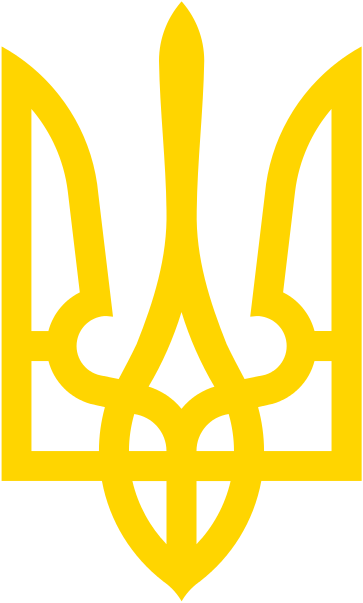

Пожежа

Пожежа - неконтрольоване горіння поза спеціальним вогнищем, що розповсюджується в часі і просторі. Знищує матеріальні цінності, створює загрозу для життя людей, тварин, негативно впливає на навколишнє природне середовище.
Надзвичайна ситуація
Надзвичайна ситуація - порушення нормальних умов життя і діяльності людей на об'єктах або територіях, спричинене аварією, катастрофою, епідемією, стихійним лихом, епізоотією, епіфітотією, великою пожежею, застосуванням засобів ураження, що призвели або можуть призвести до людських і матеріальних втрат, а також велике зараження людей і тварин.
Надзвичайна подія
Надзвичайна подія - зональна (об’єктова, місцева, регіональна або загальнодержавна) подія техногенного, природного, антропогенного та воєнного характеру, яка полягає в різкому відхиленні від норм процесів та явищ, що відбуваються, і має значний негативний вплив на життєдіяльність людини, функціонування економіки, соціальну сферу і природне середовище.
Катастрофа
Катастрофа - велика за масштабами аварія чи інша подія, яка призводить до тяжких і трагічних наслідків.
Аварія
Аварія - це порушення нормальної роботи певного механізму, що призводить до значних ушкоджень, знищення матеріальних цінностей, ураження і загибелі людей.
Газодимозахисник
Газодимозахисник - особа рядового і начальницького складу (працівники) пожежно-рятувальних, аварійно-рятувальних підрозділів і органів управління, які пройшли необхідну підготовку, мають відповідний допуск до роботи у ЗІЗОД та за станом здоров'я можуть виконувати завдання щодо рятування людей, проведення розвідки, евакуювання матеріальних цінностей, гасіння пожеж, проведення аварійно-рятувальних робіт, ліквідації НС та їх наслідків у загазованих і задимлених середовищах.
Основним завданням ГДЗС
Основним завданням ГДЗС - забезпечення безпечної роботи газодимозахисників у загазованих і задимлених середовищах з метою проведення розвідки під час гасіння пожеж, ліквідації надзвичайних ситуацій (далі - НС) та їх наслідків, рятування людей і евакуювання матеріальних цінностей.
ГДЗС
ГДЗС - це комплекс заходів, який проводиться органами управління, пожежно-рятувальними та аварійно-рятувальними підрозділами ОРСЦЗ, навчальними закладами МНС України для організації, підготовки та проведення робіт у загазованих і задимлених середовищах з метою рятування людей, гасіння пожеж, ліквідації надзвичайних ситуацій та їх наслідків тощо, та створюється на штатних і позаштатних основах у всіх пожежно-рятувальних підрозділах, учбових закладах МНС та може організовуватися в аварійно-рятувальних підрозділах ОРСЦЗ за рішенням начальника гарнізону. Штатною особою є старший майстер (майстер) ГДЗС. До позаштатних осіб газодимозахисної служби відносяться: газодимозахисник, командир ланки ГДЗС, постовий поста безпеки (ПБ), начальник контрольно-пропускного пункту (КПП), начальник ГДЗС гарнізону.
Локалізація пожежі
Локалізація пожежі - стадія гасіння пожежі, коли зупинено розвиток пожежі та створено умови для її ліквідації. Локалізація пожежі досягається:
- Правильним визначенням вирішального напрямку оперативних дій;
- Своєчасним зосередженням і введенням у дію необхідної кількості сил і засобів;
- Швидким виходом ствольників на позиції та їх чіткими, професійними діями;
- Правильним вибором та безперервною подачею вогнегасних речовин;
- Cтворенням протипожежних розривів на шляху поширення вогню.
Ліквідація пожежі
Ліквідація пожежі - стадія гасіння пожежі, коли припинено горіння, дію небезпечних факторів пожежі та усунуто умови для самовільного відновлення пожежі. Ліквідація пожежі досягається:
- Дією на поверхню матеріалів, що горять, охолоджувальними вогнегасними речовинами;
- Створенням у зоні горіння чи навколо неї негорючого газового або парового середовища;
- Створенням між зоною горіння і горючим матеріалом та повітрям (іншим окисником) ізолюючого шару з вогнегасних речовин або з негорючих матеріалів;
- Хімічним уповільненням реакції горіння шляхом застосування порошкових, газових та аерозольних вогнегасних речовин.
Вирішальний напрямок
Вирішальний напрямок - є напрямок, на якому утворилася небезпека для людей, загроза вибуху, руйнування конструкцій, викиду радіоактивних і небезпечних хімічних речовин, найбільш інтенсивне поширення вогню та на якому оперативні дії пожежно-рятувальних підрозділів на цей час можуть забезпечити успіх гасіння пожежі. Вирішальний напрямок оперативних дій на пожежі визначається з урахуванням таких принципів:
- Якщо небезпечні фактори пожежі загрожують життю і здоров’ю людей, основні сили і засоби вводяться для рятування людей;
- Якщо існує загроза вибуху або руйнування конструкцій, основні сили і засоби вводяться в місцях, де їх дії можуть попередити вибух або руйнування конструкцій;
- Якщо існує загроза викиду радіоактивних чи небезпечних хімічних речовин або стався їх викид, основні сили і засоби вводяться для проведення оперативних дій з попередження викиду або припинення розповсюдження радіоактивних чи небезпечних хімічних речовин;
- Якщо вогнем охоплено частину будівлі (споруди) та відбувається його поширення на інші її частини або на сусідні об’єкти, основні сили і засоби вводяться в місцях, де подальше поширення вогню призведе до найбільших збитків;
- Якщо вогнем охоплено окремо розташовану будівлю (споруду) та немає загрози поширення вогню на сусідні об’єкти, основні сили і засоби вводяться в місцях найбільш інтенсивного горіння;
- Якщо вогнем охоплено малоцінну будівлю (споруду) та існує загроза поширення вогню на сусідні об’єкти, основні сили і засоби вводяться з боку будівлі (споруди), що не горить;
Оперативна дільниця
Оперативна дільниця - частина території або будівлі на місці пожежі, на якій зосереджено сили і засоби, які виконують окреме оперативне завдання та об’єднані єдиним керівництвом.
Караульна служба
Караульна служба - комплекс заходів, що здійснюються для підтримання постійної готовності особового складу, техніки та оснащення чергових караулів (змін, відділень) до виконання завдань за призначенням.
Гарнізонна служба
Гарнізонна служба - комплекс заходів, що здійснюються для забезпечення постійної готовності органів та підрозділів ДСНС гарнізону до виконання завдань за призначенням.
Внутрішня служба
Внутрішня служба - комплекс заходів із забезпечення повсякденної діяльності органів та підрозділів ДСНС у місцях дислокації.